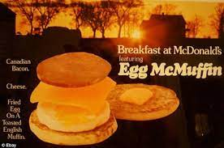

"EGG MCMUFFIN!!!!"

Description
The 19 EGGIES! are back with this CLASSIC egg,sausage and cheese sandwhich! I was simply looking for a cool gif to put on my Odin receipes site, but this came up with a great recipe for DIY McDonald's
So what’s the recipe you ask? It’s really pretty simple. You’ll need:
- Sausage (veggie is great too!)
- Onion
- Sage
- English Muffin
- American Cheese
- Eggs
- Olive Oil
- Hash Browns
Steps!
- First up you’ll need to “remove the sausage meat from its casing,” says Arateh. “Then chop the sage and onion and mix with the sausage meat, before rolling this into small balls.”
- Next, flatten the meatballs into patties, and pan-fry those babies. While those are cooking, get those hash browns going.
- “After that, fry the eggs,” says Arateh. “If you want a McDonald’s-style fried egg, you need a circular cooking mould. ‘I didn’t have any because that’s far too advanced and professional, but you can make one out of tin foil. Roll out the tin foil and make sure you rip off enough to cover the diameter of one of your English muffins.”
- Next, you’ll want to fold it over five times until it is thin and stuff, then join the ends together by folding it over… “but making sure there’s no gap” because the egg will escape.
- Then, “Crack the egg directly in the pan and in the makeshift mould to keep it circular and as neat as possible,” she explains, before giving the sausage patties one final fry.
- “Finally, assemble! Muffin. American cheese. Sausage patty. Hash brown. Muffin. ‘No butter needed really as the juices from the patty are good enough.”
Back